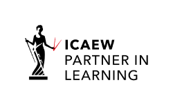

Course overview
Financial careers are evolving fast. While AI can handle the routine tasks, today's finance professionals need to be communicators, problem solvers, strategic advisors, and ethical decision-makers. Our programme prepares you for this reality.
From day one, you'll apply accounting principles to real scenarios from actual companies. This hands-on approach means you'll graduate ready to hit the ground running, not just with theoretical knowledge but practical experience that employers seek.
You'll benefit from our close-knit learning environment where lecturers know you by name and provide tailored guidance on your journey toward professional status. Many of our academics are qualified Chartered Accountants who bring current industry practices directly into the classroom.
Our degree offers exemptions from four professional accounting bodies, including the maximum exemption from up to nine papers from the Association of Chartered Certified Accountants (ACCA).
Why choose Winchester
Fast-track to qualification
Get a head start on your professional journey with our maximum 9 ACCA exemptions.
Learn from industry experts
Practising Chartered Accountants who know what employers want.
Apply your knowledge
To real financial challenges through case studies and industry simulations.
97% student satisfaction
With the teaching and learning resources on this course.
National Student Survey 2026
Network with employers
Opportunities to connect at our finance-focused careers events.
Skills beyond the numbers
Develop the human side of accounting with communication, creativity and critical thinking.
{{ ukCardTag }}
UK students
Apply through UCAS using the course code NN34.
Apply now (for UK students){{ intlCardTag }}
International students
Apply through our partner, Oxford International.
Apply now (for International students)Course structure
Teaching is mainly lectures, seminars and workshops. Classes run between 9am and 6pm, Monday to Friday in term time, and Wednesday afternoons are kept free for personal study, sports clubs and societies.
{{ year.eyebrow }}
{{ year.heading }}
{{ year.intro }}
Teaching, learning and assessment: {{ yh.teaching }} hours. Independent learning: {{ yh.independent }} hours.
How you're assessed
{{ yh.cw }}
coursework
{{ yh.ex }}
written exams
{{ yh.pr }}
practical assessment
Assessments include essays, portfolios, presentations, written exams and practical performances. We may set alternative assignments if you have a recognised disability.
You won't have timetabled teaching during your placement year, as you'll be working with your employer.
Modules
-
{{ pt.title }}
{{ pt.text }}
{{ year.note }}
Hours are indicative. Modules are correct at the time of publishing and may change.
Entry requirements
What you need depends on where you're applying from.
{{ entry.eyebrow }}
{{ entry.heading }}
{{ entry.intro }}

For UK Year 12 and 13 students
Pathways Programme
Get to know your subject and university life before you arrive, with taster lectures, practical exercises and personalised careers guidance. If you're eligible and complete the pathway, you'll receive an adjusted offer.
Register for the Pathways ProgrammeAdmissions
Scholarships and bursaries
We have a variety of scholarships and bursaries available to support you financially with the cost of your course. See if you're eligible today.
See our scholarships and bursariesProfessional body accreditations
Our BA (Hons) Accounting and Finance programme is accredited by prestigious professional bodies known for their commitment to excellence and maintaining the highest standards. This ensures that your experience at the University of Winchester is of the highest quality, aligned with industry best practices. It also helps to boost your employability and can give you exemptions from some professional exams as follows:
-

ICAEW Partner in Learning
The University of Winchester is recognised as an Institute of Chartered Accountants in England and Wales (ICAEW) Partner in Learning, working with ICAEW in the professional development of students. This allows you to apply for exemption from some modules when studying for the professional chartered accountant (ACA) qualification after graduating.
-

ACCA accredited
This degree is accredited by the Association of Chartered Certified Accountants and you can apply for up to the maximum exemption from 9 modules when studying for the professional qualification after graduating.
-
CIMA
Chartered Institute of Management Accountants (CIMA) accreditation will exempt you from the certificate and operational level modules of its professional syllabus.
-
CIPFA
Our programme allows you the opportunity to be recognised for exemption against specific examinations when studying for the Professional Chartered Public Finance Accountant (CIPFA) qualification after graduating.
Facilities
Winchester Business School facilities
Explore the spaces and rooms where you could be studying.
- The Stripe Auditorium
- West Downs Classroom
- West Downs Library
Career prospects
Our graduates have gone on to work for the Big Four accounting firms, Next, Tesco and HMRC, in roles such as audit trainee, tax specialist, financial analyst, management accountant and business manager.
Where this course could take you
- Professional practice
- Corporate finance
- Public sector
- Financial services
- Entrepreneurship
You'll get help with applications and interviews, careers guidance, networking events and advice on graduate schemes.
Pre-approved for a Masters
Apply by the end of March in your final year and meet the entry requirements, and you're pre-approved for a Winchester Masters.
How much will university cost me?
Showing fees for: {{ feeName }}
2027/28 tuition fees
- {{ r.k }}
- {{ r.v }}
To confirm
{{ feeNote }}
Additional costs
Your fees cover teaching and assessment. You may also choose to pay for:
- Core texts: £50 to £200 a year
- Travel to a placement or volunteering in Year 3: £5 to £30 a day
- Smart clothing for oral assessments: £0 to £50
- Trips: £10 a trip
Student stories
Life on the course
“[Quote from an Accounting and Finance student]”
[Student name], [year of study]To confirm
Read more student storiesMeet the course team
Jayne Little
Programme Leader
Jayne qualified as a chartered accountant with Touche Ross (now Deloitte) and was a Finance Manager in the education and charity sectors.
View staff profileLim Keong Teoh
Senior Lecturer in Accounting and Taxation
Shortlisted for the Times Higher Education Award for Most Innovative Teacher of the Year.
View staff profileDiscover Uni
Discover Uni statistics for {{ discoverCode }} (embedded widget)
Compare courses
View related courses in Business and MarketingThis course
BA (Hons) Accounting and Finance
3 years full-time · 104 to 120 points · NN34
Related course
[Related course]
To confirmRelated course